요즘 뜨는 화제작 웹툰 추천 TOP 30
요즘핫한추천작, 지금추천작, 독자PICK 같은 태그가 붙은 작품을 모았어요. 네이버웹툰·카카오웹툰·레진코믹스에서 조건에 맞는 작품 64개 중 인기 순으로 30개를 골랐어요. 인기 TOP 3: 백XX, 나 혼자 탑에서 농사, 마도전생기
2026-10-03 기준 · 성인 작품 제외
내 취향으로 더 좁혀서 추천받기 →-
1
 네이버웹툰
네이버웹툰백XX
정보사(HID) 요원 '백이수'와 범죄 조직의 보스인 쌍둥이 형 '백도경'. 같은 얼굴 다른 삶을 살아온 쌍둥이 형제. 조직에 배신당한 동생은 자신의 신분을 버리고 형이 되기로 한다. 정보사요원, 범죄 조직의 보스가 되다...!
지금추천작자극적인시리어스가족범죄네이버웹툰에서 보기 → -
2
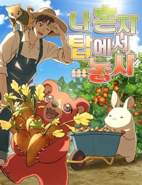
네이버웹툰나 혼자 탑에서 농사
어느 날 갑자기 도시에 나타난 정체불명의 탑. 사람들은 그곳을 던전이라고 부르기로 했다. 그리고 그곳은 험한 지형과 위험한 몬스터들로 가득했지만 수많은 보물이 기다리는 기회의 땅이기도 하다. 평범한 삶을 살고 있던 청년 세준은 우연한 기회로 던전에 초대받게 되고 자신도 부자가 될 생각…
지금추천작농사가족판타지무해한네이버웹툰에서 보기 → -
3
 네이버웹툰
네이버웹툰마도전생기
정파무림 의천맹의 최강 살수, 천하진. 자유를 찾기 위해 탈출을 감행하지만 코앞에서 목숨을 잃고 만다. 그런데… '신교불패, 만마앙복. 삼공자님의 쾌유를 경하드리옵니다!' 무림의 공적, 마교의 삼공자로 전생해버렸다?! 정파무림 최강 비밀병기 천하진의 마도무림 정복기.
지금추천작전쟁악역이주인공액션성장물네이버웹툰에서 보기 → -
4네이버웹툰
게임 속 바바리안으로 살아남기
지금껏 아무도 클리어하지 못한 게임 [던전 앤 스톤]을 9년간 플레이한 끝에 최종 보스 스테이지에 도달한 이한수. 그러나 보스 방에 입장함과 동시에, 튜토리얼 완료라는 멘트와 함께 [던전 앤 스톤] 속 바바리안 '비요른 얀델'에 빙의하게 된다. 도시에서 부과하는 막대한 세금을 내지 못…
지금추천작게임생존액션판타지네이버웹툰에서 보기 → -
5
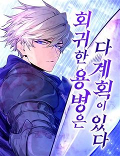
네이버웹툰회귀한 용병은 다 계획이 있다
몰락한 페르디움 가문의 복수를 위해 대전쟁을 일으킨 대륙 7강 용병왕 지셀 페르디움. 모든 복수가 순조롭게 마무리되던 와중, 예상치 못한 인물 아이던이 등장해 지셀의 계획을 무마시키고 그의 목을 벤다. 그렇게 지셀은 죽을 줄 알았지만, 눈을 떠보니 가문이 몰락하기 전의 어린 지셀로 회…
요즘핫한추천작액션판타지참교육미친작화회귀네이버웹툰에서 보기 → -
6네이버웹툰
킬러경찰
조직의 배신으로 죽게 된 전설의 킬러 ‘비광’, 경찰 ‘김경수’의 몸으로 환생한 그는 자신을 배신했던 킬러조직 화국사에게 복수를 다짐한다.
지금추천작현대동양환생참교육네이버웹툰에서 보기 → -
7
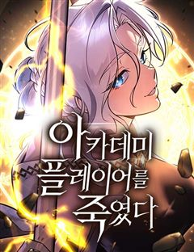
-
8
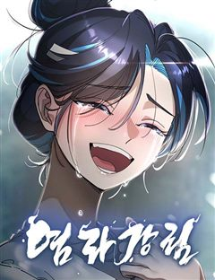
네이버웹툰염라강림
지옥이 망했다. 피가 흘러야 할 황천에는 맑은 물이 흐르고 망자들을 끓이던 솥은 차갑게 식은지 오래다. 은퇴한 염라대왕은 자신의 행복을 위해 윤회의 길을 택하고자 하지만, 혼란스러워진 지옥과 사라진 자신의 후임 털보로 인해 윤회의 길을 걸을 수 없게 된다. 인간 세상의 신이 되기 위하…
지금추천작동양신화액션오컬트네이버웹툰에서 보기 → -
9
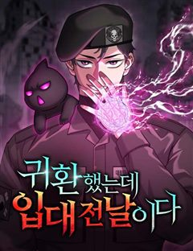
네이버웹툰귀환했는데 입대 전날이다
대한민국의 평범한 고3이었던 김민준은 갑자기 이세계로 소환 당해 흑마법사가 되었다. 집으로 돌아가겠다는 일념으로 온갖 고난을 뚫고 흑마법으로 이세계를 구한 민준. 영웅으로서의 삶과 보장된 부귀영화를 뿌리치고 지구로 복귀한다. 그토록 기다리던 고향의 문물을 즐기려고 하던 차, 문제가 생…
지금추천작소설원작네이버웹툰에서 보기 → -
10네이버웹툰
어느 마법사의 식당
요리사를 꿈꾸던 내가 사고로 이세계에 떨어졌다. 몬스터와 마법이 넘쳐나는 판타지 세계이지만 여기라고 식당을 못할 건 없잖아? 그러나 전쟁으로 인해 이세계에 들어오자마자 군대에 끌려가게 되고, 15년간의 고생 끝에 드디어 나만의 식당을 열게 되는데...
요즘핫한추천작마법힐링차원이동게임판타지네이버웹툰에서 보기 → -
11
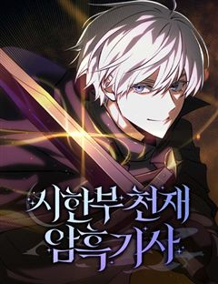
네이버웹툰시한부 천재 암흑기사
극악의 난이도로 악명이 자자한 판타지 RPG ‘이너 루나틱’. 어린 나이, 시한부 판정을 받은 유찬에게 이 게임은 자신의 전부였으며 이제는 잔인한 현실이 되었다. 지금부터 유찬은 시한부이자, 작중 1부 최대 악역 녹스 폰 리인하버로서 이 세계에서 살아남아야 한다. 과연 무사히 그는 이…
지금추천작게임상태창마법악역이주인공네이버웹툰에서 보기 → -
12네이버웹툰
상사불상사
갑의 말에는 절대복종! 5년차 K-직장인 하은호의 신념이다. '빈틈없이 쌓아온 커리어만 있다면 연애는 안 해도 된다.' 그런 그녀 앞에 어느 날 뚝 떨어진 낙하산 신입? 다시 흔들기 시작하는 과거 첫사랑? 이 불상사를 어떻게 해야 해! 달콤살벌 오피스 로맨스 코미디!
요즘핫한추천작리얼로맨스설렘폭발오피스무심남네이버웹툰에서 보기 → -
13
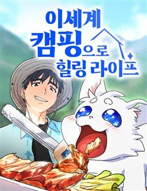
네이버웹툰이세계 캠핑으로 힐링 라이프
미각을 잃은 스타 셰프 강현은 사람들의 눈을 피해 한적한 시골로 숨는다. 시골 할아버지 집에서 발견한 이세계로 이어진 통로, 기왕 도망 온 김에 이세계에서 유유자적 캠핑 라이프를 즐기려고 하는데… 자꾸만 강현에게 관심을 가지는 이세계 사람들. 과연 강현은 진짜 힐링을 찾을 수 있을 것…
요즘핫한추천작감성적인일상이세계요리가벼운네이버웹툰에서 보기 → -
14네이버웹툰
레드셔츠
킬러 회사의 전설, 차시혁. 사랑하는 여자를 만나 은퇴를 결심하지만, 회사는 그를 쉽게 놔줄 생각이 없었다. 결국, 그의 모든 것을 앗아가기 시작하고, 차시혁은 다시 칼을 든다. 복수가 시작되고, 거대한 조직 ‘네빌가’와의 전쟁도 피할 수 없게 되는데… 복수의 칼날 끝, 과연 무엇이…
요즘핫한추천작전쟁액션미친작화복수극네이버웹툰에서 보기 → -
15네이버웹툰
레모네이드
가족처럼 지낸 소꿉친구가 있었다. 그 애와 나는 정말 ‘친구’인데 그 애의 첫 연애 소식을 듣고 무너져버렸다. 나 사실 걔를 좋아하고 있었구나..! 어떻게 해서든 이 짝사랑을 끝내야 해! 근데.. 그만 좋아하기가 왜 이렇게 힘든 거야? 짝사랑은 원래 이런 거야?! 레모네이드처럼 새콤하…
요즘핫한추천작순애남첫사랑짝사랑소꿉친구네이버웹툰에서 보기 → -
16네이버웹툰
결혼사수스캔들
외모, 재력, 지성 뭐 하나 빠지지 않는 재벌집 막내손녀 채은아. 스무 살이 되며 이제 창창한 앞날이 펼쳐진 줄 알았는데- 결혼을 하라고?! 뺏겨버린 카드도, 결혼도 문제지만 왜 하필 상대가 원수 같은 전남친이냐고! 결혼(이라 쓰고 카드라고 읽는다) 사수를 위한 비밀스러운 캠퍼스 신혼…
독자PICK캠퍼스결혼생활첫사랑혐관네이버웹툰에서 보기 → -
17네이버웹툰
재난은 늘 곁에 있다
하루 아침에 10년의 세월이 사라져버린 여자 윤다미, 그 모든 게 신이라는 남자와 엮이면서 시작되었다. 하지만 신은 본인과는 무관한 일이라며 다미를 무시한다. 그러던 중 다미의 집안에 오랫동안 찾아 헤매던 ‘물건’의 존재를 알게 되면서 다미와의 관계에 변화를 주기 시작한다. 하지만 이…
지금추천작현대동양신화혐관네이버웹툰에서 보기 → -
18
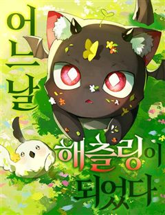
네이버웹툰어느 날 해츨링이 되었다
"뭐야, 내 모습이 왜 이렇게 작달만하고 통통해?!!" 승천을 1년 앞둔 999살 이무기, 억울하게 죽임을 당하고 눈을 떠보니 1살 해츨링이 되어버렸다. 전생의 기억을 고스란히 간직한 채 시작된 두 번째 생. 처음으로 받아보는 무조건적인 사랑에 조금씩, 그리고 완전히 녹아든다. 사랑…
지금추천작모험무해한힐링이세계네이버웹툰에서 보기 → -
19네이버웹툰
장편단편선
장편의 감상이 느껴지는 다양한 장르의 단편 모음집. 스릴러와 개그, 드라마와 로맨스 등 장르를 넘나드는 다양한 단편을 한 번에 즐겨보세요.
독자PICK흑백로맨스드라마괴담네이버웹툰에서 보기 → -
20
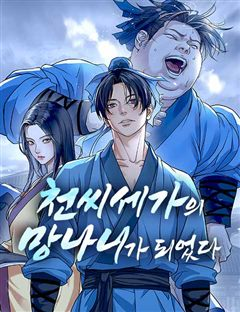
네이버웹툰천씨세가의 망나니가 되었다
천씨세가의 대공자, 천무량을 평생 호위하며 충성을 다한 한 무사, 무명(無名) 하지만 천무량에게 배신당해 생을 마감한다. 그러나 다시 눈을 뜬 그는 자신을 죽인 천씨세가의 망나니 대공자, 천무량이 되어 있었다. 과거의 기억과 무공, 냉정한 판단력을 지닌 그는 망나니의 가면을 쓰고 가문…
요즘핫한추천작액션판타지액션무협/사극성장물네이버웹툰에서 보기 → -
21
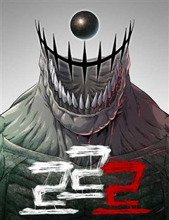
네이버웹툰르르르
평범한 일상속에서 갑자기 등장한 괴생물체와 그 주위에서 한명씩 학생들의 괴물화. 평범함은 완전히 망가졌고, 구조를 기대하기도 힘든 상황. 학생들은 저마다의 방법으로 뭉치고 생존해 나간다.
독자PICK비쥬얼쇼크바디 호러액션아포칼립스생존네이버웹툰에서 보기 → -
22네이버웹툰
불순물 연애
첫사랑의 아픔이 있는 대학생 '여름'. 어느 날, 여름의 첫사랑인 '수영'이 그녀에게 갑작스레 고백을 한다. 약혼까지 깨며 열렬히 구애 하는 수영의 모습에 흔들리는 여름. 고민 끝에 여름은 딱 1년만 갑질 연애를 하면서 수영에게 상처를 주기로 결심한다! 그런데 수영의 고백엔 비밀이 있…
독자PICK나쁜남자로맨스고자극로맨스재회네이버웹툰에서 보기 → -
23
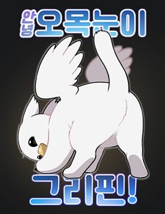
네이버웹툰안녕 오목눈이 그리핀!
이사한 집에 정체 모를 ‘오목눈이 그리핀’이 나타났다! 앞발은 푹신한 새의 다리, 뒷발은 고양이의 젤리가? 어디로 튈지 모르는 오목눈이 그리핀과 초보 집사 ‘한솔’의 좌충우돌 동거 라이프. 과연 무사할 수 있을까?
요즘핫한추천작일상개그힐링공감판타지무해한네이버웹툰에서 보기 → -
24네이버웹툰
사채지간
냉혈한 사채업자 김상안. 교사였던 여동생이 학생들의 괴롭힘으로 스스로 목숨을 끊자, 그 목숨 값을 받기 위해 가해학생들의 담임이 된다. 지옥에 떨어져도 빚은 받아내는 사채업자와 악마 같은 학생들의 지독한 사제지간.
지금추천작복수극느와르네이버웹툰에서 보기 → -
25네이버웹툰
한국에서 히어로 하기 힘들더라
누명으로 히어로의 꿈을 접은 마범태에게 찾아온 두 번째 기회. 서바이벌 프로그램으로 데뷔해 히어로가 되어야만 한다. 하지만 생각보다 쉽지 않은 요즘 K-히어로. 주 7회 근무, 기부 필수, 가만히 있어도 생기는 억까와 미쳐가는 동료들… 과연 마범태는 무사히 히어로의 꿈을 지킬 수 있을…
독자PICK현대판타지이능력우정빌런네이버웹툰에서 보기 → -
26
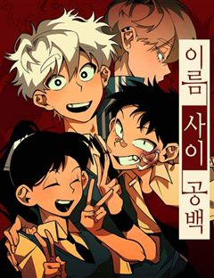
네이버웹툰이름 사이 공백
주태가 죽기 전인 10년 전 과거로 돌아왔다. 내가 바라는 것은 오직 하나, 내일도 우리가 함께할 수 있기를.
독자PICK현대우정청춘성장물네이버웹툰에서 보기 → -
27
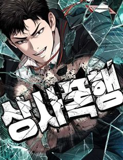
네이버웹툰상사폭행
18살, 서울 전역 고등학교를 평정하며 폭력의 정점에 오른 ‘레전드’ 권승호. 하지만, 정점에 오른 뒤 권승호는 소리 소문 없이 사라졌는데.. 그로부터 10년이 지난 지금, 사람들은 그가 적어도 전국구 조폭 두목이 되었을 거라는 모두의 예상을 뒤엎고 삼진 상사의 신입사원으로 모습을 드…
요즘핫한추천작사이다공감오피스액션네이버웹툰에서 보기 → -
28네이버웹툰
신의 요리
한국 역사상 가장 위대한 요리사, 홍시원이 갑작스럽게 세상을 떠났다. 그의 마지막 유언은 충격적이었다. 바로, 자신의 식당에서 모든 요리사가 총주방장 자리를 놓고 대결하라는 것이었다. 이 치열한 경쟁에 ‘신의 혀’를 가진 청년, 박건우가 초대된다. 누구도 믿을 수 없는 ‘태미옥’의 치…
요즘핫한추천작열혈배틀우정성장물네이버웹툰에서 보기 → -
29네이버웹툰
언더복서
지긋지긋한 왕따 인생을 벗어나기 위해서는 여자친구가 필요하다는 것을 깨달은 이기주. 그런데 하필 첫눈에 반한 그녀가 복싱 관장님의 딸? 여친을 만들어서 인생 역전을 노리려던 이기주는 링 위에서 진정한 복싱의 매력에 빠져들기 시작한다. “맷집은 그저 생기는 게 아니다!” 왕따의 인생 역…
요즘핫한추천작사이다2024 연재직행열차학원물소년왕도물네이버웹툰에서 보기 → -
30
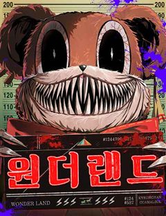
네이버웹툰원더랜드
"이곳에선 환상이 현실이 됩니다! 죽지 않고 살아남는다면" 주인공은 실종된 딸의 행방을 쫓아 기괴한 놀이공원에 도달한다. 그런 그 앞에 나타난 인형 탈을 쓴 괴물은 딸을 찾고 싶다면 놀이공원에서 게임을 해서 살아남아야 한다고 말한다. 사라진 딸을 찾기 위해 놀이공원에 준비된 죽음의 게…
요즘핫한추천작비쥬얼쇼크자극적인게임생존네이버웹툰에서 보기 →